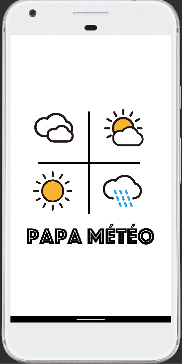
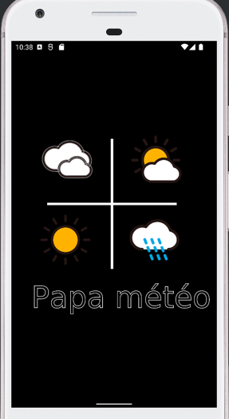

- Code Lab Android Weather
- Sommaire
- Présentation
- Etapes de réalisation
- Initialisation du projet
- Construction de la couche Data du pattern MVVM
- Injection Koin
- Affichage brut des premiers résultats
- 1er écran : Recherche et affichage du premier résultat
- Navigation
- Liste des résultats
- Localisation
- Carte Google Map
- Splash screen
- Datastore et enregistrement des préférences
- Room et cache local
L'application Android Weather permet de rechercher les prévisions météos pour une ville donnée.
Voici la liste des fonctionnalités :
- Recherche par nom de ville ou par les coordonnées GPS du téléphone
- Affichage de la météo actuelle
- Liste des prévisions pour les prochaines heures / jours
- Affichage des informations de la ville trouvée, et localisation sur une carte
- Possibilité d'ajouter / supprimer la ville trouvée dans ses favoris, pour faciliter la recherche sur cette ville lors d'une prochaine session

- Initialisation d'un projet compose et des dépendances Gradle nécessaires (Compose, Koin, Ktor, Serialization),
- Construction du squelette de l'application en MVVM pour récupérer des données Météo (View / ViewModel / Repository / API),
- Injection des dependances dans un module Koin
- Initialisation d'une API basée sur openweathermap permettant de récupérer des infos méteo, soit par texte, soit par coordonnées,
- Mapping des données entre l'API et ce qui sera affiché sur l'écran,
- Récupération des données depuis le ViewModel à l'aide des coroutines Flow,
- Affichage d'une première liste de résultats pour valider l'architecture et l'appel à l'API
- Affichage du 1er écran :
- champ de saisie,
- loader pendant la phase de chargement,
- affichage du 1er résultat,
- lien permettant d'accéder à la liste complète de résultat
- Affichage du 2ème écran :
- liste d'item affichant une information de météo
- Ajout de fonctionnalités optionnelles :
- Localisation du mobile permettant de lancer une recherche par coordonnées GPS,
- Ajout d'une carte Google Map Compose permettant d'afficher la localisation de la ville trouvée,
- Ajout en favoris d'une ville, permettant de sauvegarder localement une liste de ville, basée sur le DataStore Android
- Ajout d'un splash screen à l'application, avec une animation Lottie,
- Gestion d'un cache local d'API avec Android Room et le NetWorkBoundRessource
- Nouveau projet sous Android Studio : Empty Activity
- Configuration des dépendances Gradle
- Compose
- Koin
- Ktor
- Ktor Serialisation
- Navigation
- Room
C'est dépendances vont nous servir dans la réalisation de l'ensemble du projet
Gradle principal
plugins {
alias(libs.plugins.android.application) apply false
alias(libs.plugins.kotlin.android) apply false
alias(libs.plugins.kotlin.android.multiplatform) apply false
alias(libs.plugins.kotlin.serialization) apply false
alias(libs.plugins.kotlin.secrets) apply false
}
Gradle Application
plugins {
alias(libs.plugins.android.application)
alias(libs.plugins.kotlin.android)
alias(libs.plugins.kotlin.secrets)
id("kotlinx-serialization")
id("kotlin-kapt")
}
// ...
dependencies {
// Dependances Android classiques
// .....
// Koin for Android
implementation(libs.koin.core)
implementation(libs.koin.android)
implementation(libs.koin.test)
implementation(libs.koin.androidx.compose)
/// Ktor
implementation(libs.ktor.client.core)
implementation(libs.ktor.client.okhttp)
implementation(libs.ktor.client.serialization.kotlinx)
implementation(libs.ktor.serialization)
implementation(libs.ktor.client.log)
implementation(libs.ktor.client.json)
implementation(libs.ktor.client.android)
implementation(libs.ktor.client.content.negociation)
implementation(libs.kotlinx.coroutines.core)
implementation(libs.kotlinx.coroutines.android)
// Navigation
implementation(libs.compose.navigation)
// Location
implementation(libs.play.service.location)
// Map
implementation(libs.play.service.map)
implementation(libs.compose.map)
// Lottie
implementation(libs.lottie)
// Datastore
implementation(libs.androidx.datastore)
// Room
implementation(libs.android.room)
annotationProcessor(libs.android.room.compiler)
implementation(libs.android.room.ktx)
kapt(libs.android.room.compiler)
implementation(libs.android.gson)
}
Créer les fichiers Kotlin suivants :
- une classe
Ressource
package com.main.weather.utils
enum class Status {
SUCCESS,
ERROR,
LOADING
}
sealed class Resource<T>(
val status: Status,
val data: T? = null,
val error: Throwable? = null
) {
class Success<T>(data: T) : Resource<T>(Status.SUCCESS, data)
class Loading<T>(data: T? = null) : Resource<T>(Status.LOADING, data)
class Error<T>(throwable: Throwable, data: T? = null) :
Resource<T>(Status.ERROR, data, throwable)
}
- une classe
OpenWeatherApi
Cette classe va servir à invoquer la l'API Weather.
class OpenWeatherApi(
private val client: HttpClient,
private val apiKey : String,
private var baseUrl: String = "https://api.openweathermap.org/data/2.5/forecast",
) : KoinComponent {
suspend fun fetchWeather(city: String) = client.get("$baseUrl") {
url {
parameters.append("q", "$city, FR")
parameters.append("APPID", apiKey)
parameters.append("units", "metric")
}
}.body<WeatherResultVO>()
suspend fun fetchWeather(lat: Double, lon : Double) = client.get("$baseUrl") {
url {
parameters.append("lat", "$lat")
parameters.append("lon", "$lon")
parameters.append("APPID", apiKey)
parameters.append("units", "metric")
}
}.body<WeatherResultVO>()
}
L'API est définie ici openweathermap
1° La première fonction permet de lancer l'appel avec une coordonnée lat / lon.
Ex : curl https://api.openweathermap.org/data/2.5/forecast?lat=48.4&lon=-4.4833&units=metric&APPID=888f70e84a4d7e44f3c0d4870c926e9d
2° La deuxième fonction permet de lancer l'appel avec un texte libre.
Ex : curl https://api.openweathermap.org/data/2.5/forecast?q=Brest,FR&units=metric&APPID=888f70e84a4d7e44f3c0d4870c926e9d
- un fichier Kotlin
WeatherVO(qui contiendra tous les classes d'objets remontés par l'API)
Les objets représentent l'arbre au format JSON remonté par l'API.
package com.android.android_weather.api
import kotlinx.serialization.Serializable
@Serializable
data class WeatherResultVO(
val city: WeatherCityVO? = null,
val list: List<WeatherItemVO>? = listOf()
)
@Serializable
data class WeatherCityVO(
val name: String,
val coord: CoordinateVO,
var population: Int,
val sunrise: Double? = null,
val sunset: Double? = null
)
@Serializable
data class CoordinateVO(val lat: Double? = null, val lon: Double? = null)
@Serializable
data class WeatherItemVO(val dt_txt: String, val dt: Float, val main: WeatherInfoVO)
@Serializable
data class WeatherInfoVO(val temp: Double, val humidity: Double, val pressure: Double)
- un fichier Kotlin
WeatherDomain(qui contiendra toutes les classes d'objets remontés par le repository vers la couche Domain)
data class WeatherResultDomain(
val city: WeatherCityDomain? = null,
val items: List<WeatherItemDomain>? = listOf()
)
data class WeatherCityDomain(
val name: String,
val coord: CoordinateDomain,
var population: Int,
val sunrise: Double? = null,
val sunset: Double? = null
)
data class CoordinateDomain(
val lat: Double? = null,
val lon: Double? = null
)
data class WeatherItemDomain(
val date: LocalDateTime,
val image: String,
val infos: WeatherInfoDomain
) {
lateinit var day: String
lateinit var hour: String
}
data class WeatherInfoDomain(
val temp: Double,
val humidity: Double,
val pressure: Double
)
- un fichier Kotlin
Mapper(qui contiendra tous les mapper entre la couche data et la couche domaine.
fun WeatherResultVO.toDomain() = WeatherResultDomain(
city = this.city?.toDomain(),
items = this.list?.map { it.toDomain() },
)
fun WeatherCityVO.toDomain() = WeatherCityDomain(
name = this.name,
coord = this.coord.toDomain(),
population = this.population,
sunrise = this.sunrise,
sunset = this.sunset
)
fun CoordinateVO.toDomain() = CoordinateDomain(
lat = this.lat,
lon = this.lon
)
fun WeatherItemVO.toDomain() = WeatherItemDomain(
date = LocalDateTime.parse(this.dt_txt, DateTimeFormatter.ofPattern("yyyy-MM-dd HH:mm:ss")),
image = when {
main.humidity < 60 -> "1"
main.humidity < 80 -> "2"
else -> "3"
},
infos = this.main.toDomain()
).apply {
this.day = date.dayOfMonth.toString()
this.hour = date.hour.toString()
}
fun WeatherInfoVO.toDomain() = WeatherInfoDomain(
temp = this.temp,
humidity = this.humidity,
pressure = this.pressure
)
Ajouter également (si ce n'est pas déjà le cas), le plugin kotlin serialisation au gradle dans le module de l'application.
id "kotlinx-serialization"
- une interface
WeatherRepositoryInterface
interface WeatherRepositoryInterface {
suspend fun fetchWeather(city: String): Flow<Resource<WeatherResultDomain?>>
suspend fun fetchWeather(lat: Double, lon: Double): Flow<Resource<WeatherResultDomain?>>
}
- une classe
WeatherRepository
Implémenter l'appel à l'API OpenWeatherApi sur l'implementation du repository en utilisant les coroutines Flow.
class WeatherRepository2(
private val openWeatherApi: OpenWeatherApi,
) : KoinComponent, WeatherRepositoryInterface {
override suspend fun fetchWeather(city: String): Flow<Resource<WeatherResultDomain?>> {
TODO("Not yet implemented")
}
override suspend fun fetchWeather(
lat: Double,
lon: Double
): Flow<Resource<WeatherResultDomain?>> {
TODO("Not yet implemented")
}
}
- une classe
WeatherViewModelqui permettra de lancer les appels vers le repository, et qui exposera un state aux composants
data class WeatherViewModelState(
var city: WeatherCityDomain? = null,
var first: WeatherItemDomain? = null,
var items: List<WeatherItemDomain> = emptyList(),
var isLoading: Boolean = false,
)
class WeatherViewModel(private val repository: WeatherRepositoryInterface) :
ViewModel() {
private val _viewState = MutableStateFlow<WeatherViewModelState>(WeatherViewModelState())
var viewState = _viewState.asStateFlow()
fun cityChanged(value: String) = fetchWeather(value)
fun locationChanged(value: Location) = fetchWeather(value)
private fun fetchWeather(location: Location) = fetchWithFlow(null, location)
private fun fetchWeather(city: String) = fetchWithFlow(city)
private fun fetchWithFlow(city: String? = null, location: Location? = null) {
TODO("To impl")
}
}
Implémenter l'appel au repository pour récupérer le flow. Toute la partie data est prête, nous allons pouvoir plugger l'interface au model, et tester toute la chaîne d'appel.
Mais avant, passons à l'injection de dépendance pour déclarer tous ces objets dans notre Archiecture.
- Créer une classe
AppKoinModule(injection de tout le nécessaire au fonctionnement de l'application)
import android.util.Log
import io.ktor.client.HttpClient
import io.ktor.client.engine.HttpClientEngine
import io.ktor.client.engine.android.Android
import io.ktor.client.plugins.contentnegotiation.ContentNegotiation
import io.ktor.client.plugins.logging.LogLevel
import io.ktor.client.plugins.logging.Logger
import io.ktor.client.plugins.logging.Logging
import io.ktor.serialization.kotlinx.json.json
import kotlinx.coroutines.CoroutineScope
import kotlinx.coroutines.Dispatchers
import kotlinx.coroutines.SupervisorJob
import kotlinx.serialization.json.Json
import org.koin.androidx.viewmodel.dsl.viewModel
import org.koin.core.qualifier.named
import org.koin.dsl.module
val appModule = module {
single<String>(named("weather_api_key")) { "888f70e84a4d7e44f3c0d4870c926e9d" }
viewModel { WeatherViewModel(repository = get()) }
}
val commonModule = module {
single { Android.create() }
single { createJson() }
single { createHttpClient(get(), get(), enableNetworkLogs = true) }
single { CoroutineScope(Dispatchers.Default + SupervisorJob()) }
single<WeatherRepositoryInterface> { WeatherRepository(get()) }
single { OpenWeatherApi(get(), get(named("weather_api_key"))) }
}
fun createJson() = Json { isLenient = true; ignoreUnknownKeys = true }
fun createHttpClient(httpClientEngine: HttpClientEngine, json: Json, enableNetworkLogs: Boolean) =
HttpClient(httpClientEngine) {
install(ContentNegotiation) {
json(json)
}
if (enableNetworkLogs) {
install(Logging) {
logger = CustomHttpLogger()
level = LogLevel.ALL
}
}
}
class CustomHttpLogger() : Logger {
override fun log(message: String) {
Log.i("CustomHttpLogger", "message : $message")
}
}
- Créer une classe
WeatherApplication(point d'entrée de l'application qui va initialiser Koin)
class WeatherApplication : Application() {
override fun onCreate() {
super.onCreate()
startKoin {
androidContext(this@WeatherApplication)
modules(appModule)
modules(commonModule)
}
}
}
N'oubliez pas de référencer ce nouveau point d'entré de l'application dans le fichier Manifest.xml.
<application
android:name=".WeatherApplication".../>
Votre application est prête, lançons les tests.
- Activer les droits d'accès internet dans le manifest de l'application
<uses-permission android:name="android.permission.INTERNET" />
<uses-permission android:name="android.permission.ACCESS_NETWORK_STATE" />
- Créer un fichier
WeatherList, qui va contenir un composant @Composable, et va lancer une recherche avec en entrée le nom de la ville, et afficher une liste de résultat)
import android.annotation.SuppressLint
import androidx.compose.foundation.layout.Column
import androidx.compose.foundation.layout.Row
import androidx.compose.foundation.layout.fillMaxHeight
import androidx.compose.foundation.layout.fillMaxWidth
import androidx.compose.foundation.lazy.LazyColumn
import androidx.compose.foundation.lazy.items
import androidx.compose.material3.Text
import androidx.compose.runtime.Composable
import androidx.compose.runtime.collectAsState
import androidx.compose.runtime.getValue
import androidx.compose.ui.Modifier
import org.koin.androidx.compose.getViewModel
@Composable
fun WeatherList(name: String) {
val weatherViewModel = getViewModel<WeatherViewModel>()
val state by weatherViewModel.viewState.collectAsState()
LaunchedEffect(true) {
weatherViewModel.cityChanged(name)
}
Column() {
Text(text = "Hello $name!")
state.items.let {
LazyColumn(
modifier = Modifier
.fillMaxWidth()
.fillMaxHeight()
) {
items(items = it, itemContent = { item ->
Row() {
Text(text = "Le ${item.day} à ${item.hour}H ==> ")
Text(
text =
when (item.image) {
"1" -> "beau"
"2" -> "moyen"
"3" -> "pluie"
else -> ":/"
}
)
}
})
}
}
}
}
Utiliser ce composant dans MainActivity et rentrer une ville directement en dur dans le code pour tester la chaîne d'appel.
class MainActivity : ComponentActivity() {
override fun onCreate(savedInstanceState: Bundle?) {
super.onCreate(savedInstanceState)
setContent {
AndroidweatherTheme {
// A surface container using the 'background' color from the theme
Surface(
modifier = Modifier.fillMaxSize(),
color = MaterialTheme.colors.background
) {
WeatherList("Brest")
}
}
}
}
}
Lancer un build, vous devez obtenir le résultat suivant :
Pas mal ! Vous venez d'exécuter toute la chaîne d'appel :
Composable > ViewModel > Repository > API
Nous allons désormais travailler l'UI/UX, et permettre à l'utilisateur de saisir une recherche.
Maintenant que nous sommes capable de lancer une recherche, et d'afficher des résultats, nous allons désormais travailler sur la présentation des informations.
Nous allons réaliser 2 écrans :
- 1 écran qui permet de saisir une recherche, d'afficher le premier résultat, de naviguer vers les autres résultats,
- 1 écran qui permet de visualiser sous forme de liste les autres résultat.
Commençons par le premier écran.
Externalisation des resources
Nous allons voir dans un premier temps, comment gérer les ressources (chaînes de caractères, assets, etc.).
- Pour les chaînes de caractères dans l'application, définissez les en tant que ressources dans "string.xml"
- Pour les icones, importez les en tant que resources "drawable" au format SVG (new > images assets)
Vous trouverez votre bonheur dans les icones gratuits disponibles sur IconFinder
Nous allons définir des resources lors des prochaines étapes.
1) Créer un composant WeatherSearchBar :
@Composable
fun WeatherSearchBar(
searchText: String,
placeholderText: String = "",
onSearchTextChanged: (String) -> Unit = {},
onClearClick: () -> Unit = {}
)
WeatherSearchBar doit :
- permettre de saisir un texte avce un composant
OutlinedTextField - pre remplir le champ avec un paramètre en entrée
searchText - pre remplir le place holder avec un paramètre en entrée
placeholderText - permettre d'effacer saisie avec un bouton
- invoquer les 2 callbacks qui permettent d'intéragir avec l'extérieur :
onSearchTextChanged: la saisie dans le champ texteonClearClick: la demande de suppression de la recherche.
Utilisez le composant OutlinedTextField pour la saisie.
Pour le bouton de fermeture, vous pouvez vous servir d'un asset disponible de base.
IconButton(
onClick = { onClearClick() }
) {
Icon(
imageVector = Icons.Filled.Close,
contentDescription = stringResource(id = R.string.icn_search_clear_content_description)
)
}
Référencer ces chaînes de caractère dans le fichier strings.xml.
<!--Recherche -->
<string name="search_placeholder">Saisie une ville.</string>
<string name="search_processing_label">Recherche en cours...</string>
<string name="icn_search_clear_content_description">Annuler</string>
Compléter ce composant.
2) Créer un composant WeatherDetailsItem :
@Composable
fun WeatherDetailsItem(
modifier: Modifier,
city: WeatherCityDomain,
item: WeatherItemDomain)
WeatherDetailsItem doit :
- Afficher les informations de la ville
- Afficher les informations du premier item de météo (heure, icone, température, pourcentage d'humidité)
Référencer ces resources String, et les exploiter dans le composant.
<!-- Details -->
<string name="details_city_label">Résultats pour la ville de %s</string>
<string name="details_hour_label">En ce moment à %sH</string>
<string name="details_infos_label">%1$.1f ° | %2$.1f pourcent d\'humidité</string>
Pour la température et l'humidité, utilisez un template de resource string
Text(
text = stringResource(
id = R.string.details_infos_label,
item.infos.temp,
item.infos.humidity
)
)
Pour l'affichage de l'icone, importer 4 resources Drawable (soleil / soleil avec nuage / nuage / pluie), et les exploiter dans le composant :
Image(
painter = painterResource(
id = when (item.infos.humidity) {
in 0.0..50.0 -> R.drawable.ic_sun
in 50.0..80.0 -> R.drawable.ic_cloud
in 80.0..90.0 -> R.drawable.ic_cloud_gray
else -> R.drawable.ic_rain
}
),
contentDescription = null,
contentScale = ContentScale.FillWidth,
modifier = Modifier.width(100.dp)
)
Compléter ce composant.
N'hésitez pas à utiliser la preview pour valider le rendu.
Exemple :
@Preview(showBackground = true, backgroundColor = 0xFFFFFF)
@Composable
fun WeatherDetailsItemPreview() {
WeatherDetailsItem(
modifier = Modifier,
city = WeatherCityDomain(
name = "Brest",
coord = CoordinateDomain(),
population = 1000000,
),
item = WeatherItemDomain(
date = LocalDateTime.now(),
image = "",
infos = WeatherInfoDomain(
temp = 10.0,
humidity = 50.0,
pressure = 0.0
),
day = "12",
hour = "10"
)
)
}
3) Créer un composant (une vue) WeatherSearchScreen :
@Composable
fun WeatherSearchScreen(
navHostController: NavHostController
)
WeatherSearchScreen doit :
- référencer le composant de recherche
WeatherSearchBaret le composantWeatherDetailsItem, - afficher une 1ère information proposant de lancer une recheche, tant qu'une première recherche n'a pas été lancée.
- récupérer la ville à chercher et lancer la recherche (affichage d'un loader pour patienter),
- récupérer le premier résultat du tableau, et le passer à
WeatherDetailsItempour afficher ces informations

- référencer un bouton qui permettra de naviguer vers la liste (pour le moment fictif, il ne fait rien)
Pour le bouton, vous pouvez utiliser encore une image disponible.
Button(onClick = {
}) {
Icon(
imageVector = Icons.Filled.ArrowForward,
contentDescription = stringResource(id = R.string.icn_go_to_details)
)
}
Référencer ces resources String, et les exploiter dans le composant :
<!--Recherche -->
<string name="icn_go_to_details">Détails</string>
<string name="search_placeholder">Saisie une ville.</string>
<string name="search_processing_label">Recherche en cours...</string>
<string name="entry_label">Tu hésites à aller à la plage ? \n Go regarder la météo !</string>
Pour structurer votre écran, aidez vous du composant Scaffold.
Compléter le reste de ce composant, mais voilà la solution pour vous aider.
import androidx.compose.foundation.Image
import androidx.compose.foundation.gestures.detectTapGestures
import androidx.compose.foundation.layout.Arrangement
import androidx.compose.foundation.layout.Column
import androidx.compose.foundation.layout.fillMaxHeight
import androidx.compose.foundation.layout.fillMaxSize
import androidx.compose.foundation.layout.fillMaxWidth
import androidx.compose.foundation.layout.height
import androidx.compose.foundation.layout.padding
import androidx.compose.foundation.layout.width
import androidx.compose.material3.CircularProgressIndicator
import androidx.compose.material3.ExperimentalMaterial3Api
import androidx.compose.material3.MaterialTheme
import androidx.compose.material3.Scaffold
import androidx.compose.material3.Text
import androidx.compose.material3.TopAppBar
import androidx.compose.material3.TopAppBarDefaults
import androidx.compose.runtime.Composable
import androidx.compose.runtime.collectAsState
import androidx.compose.runtime.getValue
import androidx.compose.runtime.mutableStateOf
import androidx.compose.runtime.remember
import androidx.compose.runtime.setValue
import androidx.compose.ui.Alignment
import androidx.compose.ui.Modifier
import androidx.compose.ui.input.nestedscroll.nestedScroll
import androidx.compose.ui.input.pointer.pointerInput
import androidx.compose.ui.layout.ContentScale
import androidx.compose.ui.platform.LocalFocusManager
import androidx.compose.ui.res.painterResource
import androidx.compose.ui.res.stringResource
import androidx.compose.ui.text.style.TextAlign
import androidx.compose.ui.unit.dp
import androidx.navigation.NavHostController
import com.android.weather.m2.R
import com.android.weather.m2.domain.WeatherViewModel
import com.android.weather.m2.domain.components.WeatherDetailsItem
import com.android.weather.m2.domain.components.WeatherSearchBar
import org.koin.androidx.compose.getViewModel
@OptIn(ExperimentalMaterial3Api::class)
@Composable
fun WeatherSearchScreen(
navHostController: NavHostController
) {
var text by remember { mutableStateOf("") }
val focusManager = LocalFocusManager.current
val weatherViewModel = getViewModel<WeatherViewModel>()
val state by weatherViewModel.viewState.collectAsState()
val scrollBehavior = TopAppBarDefaults.pinnedScrollBehavior()
Scaffold(
modifier = Modifier.nestedScroll(scrollBehavior.nestedScrollConnection),
topBar = {
TopAppBar(
scrollBehavior = scrollBehavior,
title = { Text("") },
actions = {
WeatherSearchBar(
searchText = text,
placeholderText = stringResource(id = R.string.search_placeholder),
onSearchTextChanged = { it ->
text = it
weatherViewModel.cityChanged(text)
},
onClearClick = {
text = ""
weatherViewModel.cityChanged(text)
}
)
})
}
) { innerPadding ->
Column(
modifier = Modifier
.padding(innerPadding)
.fillMaxSize()
.pointerInput(Unit) {
detectTapGestures(onTap = {
focusManager.clearFocus()
})
}
) {
if (state.isLoading) {
Column(
horizontalAlignment = Alignment.CenterHorizontally,
modifier = Modifier
.fillMaxWidth()
.padding(30.dp)
) {
CircularProgressIndicator()
Text(
text = stringResource(
R.string.search_processing_label
)
)
}
} else if (state.city != null && state.first != null) {
val city = state.city!!
val item = state.first!!
WeatherDetailsItem(
modifier = Modifier
.fillMaxWidth()
.padding(20.dp)
.weight(2f),
city = city,
item = item
)
} else {
Column(
modifier = Modifier
.fillMaxWidth()
.fillMaxHeight()
.padding(20.dp),
verticalArrangement = Arrangement.Center,
horizontalAlignment = Alignment.CenterHorizontally
) {
Image(
painter = painterResource(
id = R.drawable.ic_weather_question
),
contentDescription = null,
contentScale = ContentScale.Crop,
modifier = Modifier
.width(100.dp)
.height(100.dp)
)
Text(
text = stringResource(id = R.string.entry_label),
textAlign = TextAlign.Center,
modifier = Modifier
.fillMaxWidth()
.padding(30.dp),
style = MaterialTheme.typography.bodyLarge,
)
}
}
}
}
}
4) Modification de la Main Activity :
Référencer l'écran WeatherSearchScreen dans l'Activitiy.
class MainActivity : ComponentActivity() {
@OptIn(ExperimentalAnimationApi::class, ExperimentalComposeUiApi::class)
override fun onCreate(savedInstanceState: Bundle?) {
super.onCreate(savedInstanceState)
setContent {
AndroidweatherTheme {
// A surface container using the 'background' color from the theme
Surface(
modifier = Modifier.fillMaxSize(),
color = MaterialTheme.colors.background
) {
val navHostController = rememberNavController()
WeatherSearchScreen(navHostController = navHostController)
}
}
}
}
}
Vous avez désormais un écran fonctionnel permettant de lancer une recherche, d'afficher un premier résultat, nous allons désormais brancher ce qu'il faut pour naviguer vers la liste complète des résultats.
Pour la navigation, nous allons utiliser l'objet navHostController en entrée dans la vue WeatherSearchScreen. Avant cela, il nous faut définir les "routes" de notre application.
Tout d'abord lisez cette documentation sur la navigation avec Compose.
1) Création d'un écran WeatherDetailsListScreen
Créer un composant (un écran) WeatherDetailsListScreen, pour le moment il sera vide.
@Composable
fun WeatherDetailsListScreen(
navHostController: NavHostController,
cityName: String
) {
}
2) Définition du graphe de navigation
Créer un composant SetupNavGraph. Ce composant va décrire les différents "écrans" de notre application, et la façon dont on navigue.
@ExperimentalAnimationApi
@ExperimentalComposeUiApi
@Composable
fun SetupNavGraph(navHostController: NavHostController) {
NavHost(
navController = navHostController,
startDestination = Screen.WeatherSearch.route
) {
composable(
route = Screen.WeatherSearch.route
) {
WeatherSearchScreen(
navHostController = navHostController
)
}
composable(
route = "${Screen.WeatherList.route}/{cityName}",
arguments = listOf(navArgument("cityName") { type = NavType.StringType })
) {
WeatherDetailsListScreen(
navHostController = navHostController,
cityName = it.arguments?.getString("cityName") ?: ""
)
}
}
}
sealed class Screen(val route: String) {
object WeatherSearch : Screen("WeatherSearch")
object WeatherList : Screen("WeatherList")
}
Ce composant décrit donc un système de navigation avec :
- une route pour la recherche,
- une route pour le détails des résultats.
Notez que le 2ème écran prend en entrée un nom de ville {cityName}. Notez également que l'on spécifie la route par défaut.
Nous sommes prêt pour la navigation, référencez ce composant dans la MainActivity.
AndroidweatherTheme {
val navHostController = rememberNavController()
SetupNavGraph(navHostController = navHostController)
}
3) Navigation entre les 2 écrans
Référencer cette resource String :
<!-- Liste -->
<string name="icn_go_to_details">Détails</string>
Dans le composant WeatherSearchScreen, brancher la navigation sur le bouton précedemment créé.
Button(onClick = {
navHostController.navigate(route = "${Screen.WeatherList.route}/${city.name}")
}) {
Icon(
imageVector = Icons.Filled.ArrowForward,
contentDescription = stringResource(id = R.string.icn_go_to_details)
)
}
Désormais lorsque vous avez lancé une recherche, qu'un résultat est disponible, et que vous appuyez sur le bouton d'affichage de la liste, vous accéder au composant (écran) WeatherDetailsListScreen.
Cette écran est vide pour le moment, nous allons le remplir.
Nous avons construit une "url dynamique" qui pointe vers le détail de la liste, avec en entrée de la route, le nom de la ville. Vous pouvez désormais naviguer vers la liste détaillée, qui est pour le moment vide.
Référencer ces resources String :
<!-- Liste -->
<string name="icn_search_back_content_description">Retour</string>
<string name="icn_go_to_fav">Favoris</string>
<string name="list_title_label">Météo heure par heure pour %s</string>
1) Composant WeatherList
Créer un composant WeatherList. Ce composant va référencer une LazyColumn, et afficher les items en entrée.
@Composable
fun WeatherList(weatherItems: List<WeatherItemDomain>)
La LazyColumn va créer pour chaque item, un composant WeatherListRendererItem
Exemple disponible dans la documentation :
import androidx.compose.foundation.lazy.items
@Composable
fun MessageList(messages: List<Message>) {
LazyColumn {
items(messages) { message ->
MessageRow(message)
}
}
}
Compléter ce composant.
2) Composant WeatherListRendererItem
Créer un composant WeatherListRendererItem, qui va représenter un item de la liste.
@Composable
fun WeatherListRendererItem(weatherItem: WeatherItemDomain)
Compléter ce composant pour y afficher la date, l'heure, l'icone fonction de l'humidité, la température et l'humidité.
Utiliser cette resource String pour l'affichage.
<string name="details_hour_day_label">Le %s à %sH</string>
3) Affichage dans l'écran WeatherDetailsListScreen
Créer la vue WeatherDetailsListScreen, c'est cette vue qui va inclure la liste WeatherList et s'occuper du chargement.
Créer un viewmodel pour cette vue, qui étendra le viewmodel existant. Référencer ce nouveau modèle dans le module Koin.
class WeatherDetailsViewModel(repository: WeatherRepositoryInterface):WeatherViewModel(repository)
NB : par principe, 1 vue = 1 viewmodel.
Même si le view model ne fera rien de plus.
Cet écran, à sa création :
- Va récupérer le viewmodel
WeatherDetailsViewModelpar injection, - Lancer automatiquement un chargement avec la ville
cityNameen entrée via [LaunchedEffect](https://developer.android.com/jetpack/compose/side-effects?hl=fr - Afficher un loader durant le chargement,
- Afficher la ville de résulat, ainsi qu'un bouton de "retour" dans une
TopAppBar, - Afficher la
WeatherListune fois le chargement terminé, et récupérer la liste de données pour l'afficher.
Voici le code pour la TopBar, qui permet d'afficher le nom de la ville pour le détails, ainsi qu'un bouton de retour.
Scaffold(
topBar = {
TopAppBar(
title = {
Text(stringResource(id = R.string.list_title_label, cityName ?: ""))
},
navigationIcon = {
IconButton(onClick = { navHostController.popBackStack() }) {
Icon(
imageVector = Icons.Filled.ArrowBack,
modifier = Modifier,
contentDescription = stringResource(id = R.string.icn_search_back_content_description)
)
}
}
)
}
) {
// TODO viewmodel pour lancer chargement sur la ville en entrée + loader ou liste en fonction du State
}
Voilà le résultat final attendu pour la liste.
La localisation va nous permettre de rechercher la météo à partir des coordonnées GPS du téléphone.
Vous trouverez de nombreuses informations dans la documentation officielle de Google.
1) Ajout de dépendance Gradle
// Location
implementation("com.google.android.gms:play-services-location:20.0.0")
2) Autorisation d'accès aux coordonnées du téléphone
Dans le manifest, ajouter ces autorisations :
<manifest ... >
<!-- Always include this permission -->
<uses-permission android:name="android.permission.ACCESS_COARSE_LOCATION" />
<!-- Include only if your app benefits from precise location access. -->
<uses-permission android:name="android.permission.ACCESS_FINE_LOCATION" />
</manifest>
3) Définition des authorisations
Tout d'abord, lire cette documentation, pour comprendre le principe de demande d'autorisation sur Android.
- Créer une classe PermissionUtil générique, dont le rôle va être de contrôler si les autorisations ont été données par l'utilisateur, et le cas échéant, les lui demander.
class PermissionUtil {
companion object {
fun checkIfPermissionGranted(context: Context, permissions: Array<String>): Boolean {
var granted = true
permissions.forEach {
granted = granted && (ContextCompat.checkSelfPermission(context, it)
== PackageManager.PERMISSION_GRANTED)
}
return granted
}
fun shouldShowPermissionRationale(context: Context, permissions: Array<String>): Boolean {
(context as Activity).let { activity ->
return permissions.any { permission ->
ActivityCompat.shouldShowRequestPermissionRationale(
activity,
permission
)
}
}
}
}
}
- Créer un composant
PermissionPopupSystem, dont le rôle va être de proposer une popup system à l'utilisateur, pour lui demander d'accéder à une ressource.
@Composable
fun PermissionPopupSystem(
context: Context,
permissions: Array<String>,
permissionRationale: String,
permissionAction: (PermissionAction) -> Unit
) {
val scaffoldState = remember { SnackbarHostState() }
val permissionGranted =
PermissionUtil.checkIfPermissionGranted(
context,
permissions
)
if (permissionGranted) {
permissionAction(PermissionAction.OnPermissionGranted)
return
}
val launcher = rememberLauncherForActivityResult(
ActivityResultContracts.RequestMultiplePermissions()
) { permissionsResult ->
val isGranted = permissions.any {
permissionsResult.containsKey(it) && permissionsResult.getOrDefault(it, false)
}
if (isGranted) {
// Permission Accepted
permissionAction(PermissionAction.OnPermissionGranted)
} else {
// Permission Denied
permissionAction(PermissionAction.OnPermissionDenied)
}
}
val showPermissionRationale = PermissionUtil.shouldShowPermissionRationale(
context,
permissions
)
if (showPermissionRationale) {
LaunchedEffect(showPermissionRationale) {
val snackbarResult = scaffoldState.showSnackbar(
message = permissionRationale,
actionLabel = "Grant Access",
duration = SnackbarDuration.Long
)
when (snackbarResult) {
SnackbarResult.Dismissed -> {
//User denied the permission, do nothing
permissionAction(PermissionAction.OnPermissionDenied)
}
SnackbarResult.ActionPerformed -> {
launcher.launch(permissions)
}
}
}
} else {
// https://developer.android.com/jetpack/compose/side-effects
SideEffect {
launcher.launch(permissions)
}
}
}
- Créer une classe
PermissionActiondont le rôle est d'indiqué quel choix a été réalisé par le client
sealed class PermissionAction {
object OnPermissionGranted : PermissionAction()
object OnPermissionDenied : PermissionAction()
}
4) Récupération des coordonées GPS du téléphone.
Désormais, maintenant que les autorisations sont en place, nous pouvons requêter le téléphone pour obtenir les coordonnées.
Lire cette documentation en premier lieu pour comprendre comment peuvent être récupérées les coordonnées GPS.
Lire également cette documentation, qui décrit l'implementation basée sur Kotlin callbackFlow (chapitre "The solution — callbackFlow")
- Créer une classe
LocationViewModeldont le rôle va être de requêter au système les données de localisation
data class LocationrViewModelState(
var location: Location? = null,
var isLocationSearching: Boolean = false,
)
class LocationViewModel(private val client: FusedLocationProviderClient? = null) : ViewModel() {
companion object {
private const val UPDATE_INTERVAL_SECS = 10L
private const val FASTEST_UPDATE_INTERVAL_SECS = 2L
}
var askLocationPermission = MutableStateFlow(false)
private set
fun launchLocationPermission(request: Boolean) {
askLocationPermission.value = request
}
fun locate() = callbackFlow<LocationrViewModelState> {
val locationRequest = LocationRequest.create().apply {
interval = TimeUnit.SECONDS.toMillis(UPDATE_INTERVAL_SECS)
fastestInterval = TimeUnit.SECONDS.toMillis(FASTEST_UPDATE_INTERVAL_SECS)
priority = Priority.PRIORITY_HIGH_ACCURACY
}
val callBack = object : LocationCallback() {
override fun onLocationResult(locationResult: LocationResult) {
super.onLocationResult(locationResult)
val location = locationResult.lastLocation
Toast.makeText(
client?.applicationContext,
"Get location $location.",
Toast.LENGTH_SHORT
).show()
trySend(LocationrViewModelState(location, false))
}
}
trySend(LocationrViewModelState(null, true))
client?.requestLocationUpdates(locationRequest, callBack, Looper.getMainLooper())
awaitClose { client?.removeLocationUpdates(callBack) }
}
}
Déclarez ce view model dans Koin :
single<FusedLocationProviderClient> { LocationServices.getFusedLocationProviderClient(requireApplication.applicationContext) }
viewModel { LocationViewModel(client = get()) }
Déclarez également dans le fichier du module Koin, cette fonction inline, qui permet de récupérer une instance de l'application
private inline val requireApplication
get() = WeatherApplication.instance ?: error("Missing call: initWith(application)")
Et dans l'application principale :
class WeatherApplication : Application() {
companion object {
var instance: WeatherApplication? = null
}
override fun onCreate() {
instance = this
super.onCreate()
startKoin {
androidContext(this@WeatherApplication)
modules(appModule)
modules(commonModule)
}
}
}
L'instance est set avant l'initialisation de Koin.
- Créer un composant
LocationPermissionIcondont le rôle est de :
- présenter un icon de localisation,
- lancer les demandes d'autorisation,
- lancer la recherche de localisation.
- envoyer les coordonées récupérées au composant parent via une callback
@Composable
fun LocationPermissionIcon(
locationSearching: (search: Boolean) -> Unit,
locationChange: (location: Location) -> Unit
) {
val scope = rememberCoroutineScope()
val context = LocalContext.current
val locationViewModel = getViewModel<LocationViewModel>()
val askLocationPermission by locationViewModel.askLocationPermission.collectAsState()
if (askLocationPermission) {
PermissionPopupSystem(
context,
arrayOf(
Manifest.permission.ACCESS_FINE_LOCATION,
Manifest.permission.ACCESS_COARSE_LOCATION
),
stringResource(id = R.string.permission_location_rationale),
) { permissionAction ->
when (permissionAction) {
is PermissionAction.OnPermissionGranted -> {
locationViewModel.launchLocationPermission(false)
scope.launch {
locationViewModel.locate().collect {
locationSearching(it.isLocationSearching)
if (it.location != null) {
locationChange(it.location!!)
this.cancel()
}
}
}
}
is PermissionAction.OnPermissionDenied -> {
locationViewModel.launchLocationPermission(false)
}
}
}
}
IconButton(onClick = { locationViewModel.launchLocationPermission(true) }) {
Icon(
imageVector = Icons.Filled.LocationOn,
contentDescription = stringResource(id = R.string.icn_permission_icon_description)
)
}
}
Ajoutez ces ressources
<!-- Localisation -->
<string name="icn_permission_icon_description">Me localiser</string>
<string name="permission_location_rationale">Pour te donner une météo précise, j\'ai besoin de connaître ta position.</string>
5) Récupération des coordonnées, et lancement de la recherche
- Référencer ce nouveau composant dans
WeatherSearchBar, à côté du bouton "clear".
- Modifier la signature de
WeatherSearchBaret faire remonter les coordonnées par ces nouvelles callback
fun WeatherSearchBar(
searchText: String,
placeholderText: String = "",
onSearchTextChanged: (String) -> Unit = {},
onClearClick: () -> Unit = {},
onLocateSearching: (value: Boolean) -> Unit = {},
onLocateChange: (location: Location) -> Unit = {}
)
- onLocateSearching : localisation en cours de chargement
- onLocateChange : récupération d'une nouvelle localisation onLocateChange
Déclarez désormais le composant LocationPermissionIcon dans WeatherSearchBar dans la propriété trailingIcon, à la suite du composant ‘clear'.
LocationPermissionIcon(
locationChange = onLocateChange,
locationSearching = onLocateSearching
)
- Dans
WeatherSearchScreen, exploiter ces 2 callback.
- onLocateSearching : Affichage d'un loader indiquant qu'une localisation est en cours
- onLocateChange : lance une recherche sur le view model
WeatherViewModelen explotant la méthode de recherche par coordonnées.
onLocateSearching = {
locationSearching = it
},
onLocateChange = {
weatherViewModel.locationChanged(it)
}
Déclarez également le flag locationSearching :
var locationSearching by remember { mutableStateOf(false) }
Et définissez un état lorsque ce flag change pour indiquer le chargement.
if (state.isLoading || locationSearching) {
Column(
horizontalAlignment = Alignment.CenterHorizontally,
modifier = Modifier
.fillMaxWidth()
.padding(30.dp)
) {
CircularProgressIndicator()
Text(
text = stringResource(
id = if (state.isLoading) {
R.string.search_processing_label
} else {
R.string.localisation_processing_label
}
)
)
}
}
Déclarez cette ressource :
<string name="localisation_processing_label">Localisation en cours...</string>
Le résultat est tout simplement un state WeatherViewModelState, exactement comme une recherche textuelle, il n'y a donc rien de plus à prévoir pour afficher le résultat d'une recherche par coordonnées.
Vous récupérer désormais les coordonnées du téléphones et rechercher la météo grâce à ces coordonnées.
Dans ce chapitre, nous allons intégrer une carte Google Map à l'application pour afficher la ville trouvée sur une carte.
Pour cela, Android met à disposition Maps SDK pour Android
1) Configuration et dépendances Gradle.
Ajouter ces dépendances Gradle du module.
// Map
implementation("com.google.maps.android:maps-compose:2.2.1")
implementation("com.google.android.gms:play-services-maps:18.0.2")
Pour la récupération de la clé API, ajouter ce plugin au Gradle du projet principal.
plugins {
// ...
id("com.google.android.libraries.mapsplatform.secrets-gradle-plugin") version "2.0.1" apply false
}
Ajouter l'utilisation de ce module au Gradle du module.
plugins {
// ...
id("com.google.android.libraries.mapsplatform.secrets-gradle-plugin")
}
Référencer la clé d'API dans le fichier local.properties
MAPS_API_KEY=xxxxxxxxxxxxx
Synchroniser Gradle.
Puis rajoutez une référence à cette clé dans le Manifest (dans le noeud XML application).
<meta-data
android:name="com.google.android.geo.API_KEY"
android:value="${MAPS_API_KEY}" />
2) Création d'un view model CityViewModel
Ce View model va exposer des informations utiles à la Map pour afficher la ville et les informations.
class CityViewModel(private val city: WeatherCityDomain): ViewModel() {
val initialZoom = 12f
val label: String = city.name
val population : Int
get() = city.population
val lat: Double = city.coord.lat ?: 0.0
val lon: Double = city.coord.lon ?: 0.0
val hasCoordinate: Boolean
get() = city.coord.lat != null && city.coord.lon != null
val formattedCoordinate: String
get() {
return if (hasCoordinate) {
"${
LocationFormater.latitudeAsDMS(city.coord.lat!!, 2)
} ${
LocationFormater.longitudeAsDMS(
city.coord.lon!!, 2
)
}"
} else ""
}
}
Créer cette objet utilitaire LocationFormater qui permet de formater des coordonnées.
object LocationFormater {
fun latitudeAsDMS(latitude: Double, decimalPlace: Int): String {
val direction = if (latitude > 0) "N" else "S"
var strLatitude = Location.convert(latitude.absoluteValue, Location.FORMAT_SECONDS)
strLatitude = replaceDelimiters(strLatitude, decimalPlace)
strLatitude += " $direction"
return strLatitude
}
fun longitudeAsDMS(longitude: Double, decimalPlace: Int): String {
val direction = if (longitude > 0) "W" else "E"
var strLongitude = Location.convert(longitude.absoluteValue, Location.FORMAT_SECONDS)
strLongitude = replaceDelimiters(strLongitude, decimalPlace)
strLongitude += " $direction"
return strLongitude
}
private fun replaceDelimiters(str: String, decimalPlace: Int): String {
var str = str
str = str.replaceFirst(":".toRegex(), "°")
str = str.replaceFirst(":".toRegex(), "'")
val pointIndex = str.indexOf(".")
val endIndex = pointIndex + 1 + decimalPlace
if (endIndex < str.length) {
str = str.substring(0, endIndex)
}
str += "\""
return str
}
}
3) Creation du composant WeatherMap
Créer un composant WeatherMap
@Composable
fun WeatherMap(modifier: Modifier, viewModel: CityViewModel)
En vous aidant de cette documentation, afficher un Marker permettant d'afficher les coordonnées et informations d'une ville à partir du View model en entrée. Vous pouvez largement vous inspirer de l'exemple
Le marker est intéractif, et affiche une information au tap.
Ressource String à ajouter :
<!-- map popup -->
<string name="city_description">%s ---- %d habitants</string>
Formattage pour l'affichage de l'information
val description = LocalContext.current.resources.getString(
R.string.city_description,
viewModel.formattedCoordinate,
viewModel.population
)
4) Intégration du composant WeatherMap
Dans l'écran WeatherSearchScreen, intégrer ce composant lorsque les résultats pour une ville sont disponibles.
WeatherMap(
modifier = Modifier
.fillMaxWidth()
.height(200.dp)
.padding(10.dp)
.weight(1f),
viewModel = CityViewModel(city = city)
)
Notez que le View Model est instancié à la volée, sans nécessité d'injection.
Vous obtenez le résultat suivant :
Rien de tel qu'un premier écran animé, pour donner envie à l'utilisateur de poursuivre l'expérience dans l'application. Nous allons ajouter un premier écran à l'application, qui permettrait en fonction du contexte fonctionnel et technique, de charger des données, de préparer une interface, etc.
Pour cela nous allons utiliser un SDK magique : Lottie.
Quelques informations sur l'histoire et le fonctionnement de Lottie .
1) Ajout de la dépendance Gradle
// Lottie
implementation("com.airbnb.android:lottie-compose:5.2.0")
2) Création de l'animation
Créer un logo au format SVG, ou utiliser un icone disponible sur IconFinder. Rendez vous sur LottieFiles, et transformer votre SVG au format Lottie, en choissisant des animations proposées. Exportez le tout au formation JSON.
Importez désormais cette animation dans Android Studio, créer un dossier "Android Ressource Directory" dans le dossier "res", et nommez le "raw". Copiez votre fichier JSON dedans.
3) Création du SplashScreen
Créer un composant (écran) SplashScreen
@Composable
fun SplashScreen(navHostController: NavHostController) {
val raw = R.raw.papa_meteo
val composition by rememberLottieComposition(LottieCompositionSpec.RawRes(raw))
val progress by
animateLottieCompositionAsState(composition = composition)
Column(
modifier = Modifier
.fillMaxSize()
.fillMaxHeight(),
verticalArrangement = Arrangement.Center,
horizontalAlignment = Alignment.CenterHorizontally
) {
LottieAnimation(
composition = composition,
progress = { progress }
)
}
/// TODO attendre la fin de l'animiation, et naviguer vers la page de recherche
}
Compléter le composant pour naviguer vers l'écran de recherche une fois l'animation terminée : utiliser les informations contenues dans le state pour connaitre l'état de l'animation, et utilisez le navHostController pour naviguer.
Regarder ici pour trouver un exemple ‘Start the Animation on a Button Click' où l'algo écoute le fin de lecture de l'animation.
4) Référencement du SplashScreen
Dans le composant SetupNavGraph, référencer le SplashScreen en tant que premier écran.
Vous pouvez lancer l'application et visualiser l'animation au démarrage de l'application.
5) Bonus : gestion du DarkTheme
Faites en sorte d'avoir une animation dédiée au light theme, une au dark theme (changement de couleur des bordures par exemple).
Pour cela :
- exporter cette une nouvelle animation au format JSON, et importez là sous un autre nom dans l'application.
- tester si le système est en light ou dark mode dans
SplashScreen, et charger la bonne animation en fonction.
androidx.compose.foundation.isSystemInDarkTheme
Passer en light mode ou en dark mode, et testez votre animation.
adb shell "cmd uimode night yes"
adb shell "cmd uimode night no"

Cette fonctionnalité va permettre de sauvegarder dans une liste une ville, pour rapidement lancer une recherche dessus. Nous allons donc ajouter un bouton "favoris" sur le résultat, et ajouter / supprimer la ville dans la liste sauvegardée. La liste des favoris sera accessible dans la page de recherche. Lorsque l'utilisateur sélectionne une ville, celle-ci est directement chargée.
1) Création du Datastore
Le datastore permet de sauvegarder localement des informations sur le device. Veuillez d'abord prendre connaissance de la documentation sur le datastore.
- Ajouter cette dépendance Gradle.
implementation("androidx.datastore:datastore-preferences:1.0.0")
- Créer la data class
FavCityqui va stocker les informations de la ville.
data class FavCity(
val name : String
)
- Créer l'interface
UserPreferencesRepositoryInterfacedu datastore :
interface UserPreferencesRepositoryInterface {
val favsCities : Flow<List<FavCity>>
suspend fun addOrRemoveFavCity(favCity : FavCity)
suspend fun isInFavs(favCity : FavCity): Flow<Boolean>
}
- Créer l'implémentation
UserPreferencesRepositoryImpldu data store :
class UserPreferencesRepositoryImpl(
private val dataStore: DataStore<Preferences>,
) : UserPreferencesRepositoryInterface {
private object Keys {
val cities = stringPreferencesKey("cities")
}
private inline val Preferences.cities
get() = this[Keys.cities] ?: ""
override val favsCities: Flow<List<FavCity>> = dataStore.data
.catch {
// throws an IOException when an error is encountered when reading data
if (it is IOException) {
emit(emptyPreferences())
} else {
throw it
}
}.map { preferences ->
preferences.cities.split(",").mapNotNull {
if(it.trim().isNotEmpty()) { FavCity(it) } else { null }
}
}.distinctUntilChanged()
override suspend fun addOrRemoveFavCity(favCity: FavCity) {
dataStore.edit {
val index = it[Keys.cities]?.split(",")?.indexOf(favCity.name)
if (index != null && index != -1) {
it[Keys.cities] =
it[Keys.cities]?.split(",")?.filter { cityName -> cityName != favCity.name }
?.joinToString() ?: ""
} else {
it[Keys.cities] = (it[Keys.cities] ?: "") + favCity.name + ","
}
}
}
override suspend fun isInFavs(favCity: FavCity): Flow<Boolean> =
dataStore.data.map { preferences ->
preferences.cities.indexOf(favCity.name) != -1
}.distinctUntilChanged()
}
Prenez connaissance de l'implémentation pour comprendre la logique de sauvegarde, de récupération d'une ville. Notez que les méthodess retournent des flow, ce qui permettra de requêter le datastore comme une API.
- Ajouter ce code dans le fichier
AppKoinModule
private val Context.dataStore by preferencesDataStore(name = "user_preferences")
- Référencer cette implementation dans le module Koin.
single<UserPreferencesRepositoryInterface> { UserPreferencesRepositoryImpl(requireApplication.dataStore) }
2) Création de l'UI
- Créer un view model
FavViewModelqui va permettre de s'interfacer avec les préférencer utilisateurs.
data class FavViewModelState(
var currentFavCity: FavCity? = null,
var isInFav: Boolean = false,
var favs: List<FavCity> = emptyList(),
var isLoading: Boolean = false,
)
class FavViewModel(private val userPreferences: UserPreferencesRepositoryInterface) : ViewModel() {
fun load() = flow {
userPreferences.favsCities.collect {
emit(
FavViewModelState(
favs = it.filter { fav -> fav.name.isNotEmpty() },
isLoading = false
)
)
}
}
fun addOrRemoveCity(city: WeatherCityDomain) {
viewModelScope.launch {
userPreferences.addOrRemoveFavCity(FavCity(city.name))
isInFav(city)
}
}
fun isInFav(city: WeatherCityDomain) = flow {
userPreferences.isInFavs(FavCity(city.name)).collect {
emit(
FavViewModelState(
currentFavCity = FavCity(city.name),
isInFav = it,
isLoading = false
)
)
}
}
}
Ce view model possède les méthodes qui vont permettre à l'UI de s'interfacer avec les préferences, et emettre, comme pour un appel à un repository, un état du view model. Rajoutez ce view model en injection Koin.
N'oubliez pas de référencer ce ViewModel dans Koin.
- Créer un composant
FavIcon, qui va permettre au click, d'ajouter ou de supprimer une ville.
@Composable
fun FavIcon(
city: WeatherCityDomain,
modifier: Modifier
) {
val favViewModel = getViewModel<FavViewModel>()
val state by remember(favViewModel) {
favViewModel.isInFav(city)
}.collectAsState(initial = FavViewModelState())
IconButton(onClick = { favViewModel.addOrRemoveCity(city) }, modifier = modifier) {
Icon(
imageVector = if (state.isInFav) {
Icons.Default.Favorite
} else Icons.Filled.FavoriteBorder,
contentDescription = stringResource(id = R.string.fav_icon_description)
)
}
}
Ajouter la descriptiopn de l'icone dans les ressources string.
<!-- Favoris -->
<string name="fav_title_label">Mes recherches habituelles</string>
<string name="fav_icon_description">Ajouter / Supprimer des favoris</string>
Notez qu'en fonction du state, l'icon diffère. Référencer ce composant FavIcon dans le composant WeatherDetailsItem.
- Création de la liste
Créer un composant FavList.
@Composable
fun FavsList(modifier: Modifier, selectionChange: (String) -> Unit) {
val favViewModel = getViewModel<FavViewModel>()
val state by remember(favViewModel) {
favViewModel.load()
}.collectAsState(initial = FavViewModelState())
Column(modifier = modifier) {
if (state.isLoading) {
Box(
contentAlignment = Alignment.Center,
modifier = Modifier
.fillMaxWidth()
.padding(10.dp)
) {
CircularProgressIndicator()
}
} else if (state.favs.isNotEmpty()) {
Row(
modifier = modifier.padding(1.dp),
verticalAlignment = Alignment.CenterVertically,
horizontalArrangement = Arrangement.Center
) {
Icon(
modifier = Modifier.padding(10.dp),
imageVector = Icons.Filled.List,
contentDescription = stringResource(id = R.string.icn_go_to_details)
)
Text(
text = stringResource(id = R.string.fav_title_label),
style = MaterialTheme.typography.bodyLarge
)
}
LazyColumn(
modifier = Modifier
.fillMaxWidth()
.fillMaxHeight()
) {
items(items = state.favs, itemContent = { item ->
Text("- ${item.name}", modifier = Modifier
.padding(5.dp)
.clickable {
selectionChange(item.name)
})
})
}
}
}
}
Ce composant se charge tout simplement de lancer le chargement des favoris au démarrage, et d'afficher chaque ville dans une liste. Lorsque l'utilisateur selectionne une ville, la callback en entrée est appelée.
Référencer le composant FavsList dans le composant WeatherSearchScreen pour que cette liste soit disponible à l'affichage du premier écran de recherche.
FavsList(
modifier = Modifier
.fillMaxWidth()
.padding(30.dp),
selectionChange = {
text = it
weatherViewModel.cityChanged(text)
}
)
Lancer l'application, rechercher et ajouter des villes à vos favoris. Relancez l'application, et regarder la liste des favoris à disposition.
Désormais, lorsque l'utilisateur sélectionne une ville, la callback lance un appel classique de recherche, cette fois à partir de la ville selectionnée. Il n'y a rien de plus à faire, l'état en sortie va mettre à jour la recherche.
Notez l'état du favoris.
Vous utilisez désormais un data store local pour sauvegarder les préférences d'un utilisateur. Vous pouvez imaginer de nombreux cas d'usage du data store local (sauvegarde d'un identifiant, d'un mail, d'une configuration d'interface, etc.)
Android Room permet de sauvegarder localement des données. Nous allons exploiter Android Room pour mettre en cache les appels à l'API météo.
Veuillez d'abord prendre connaissance de la présentation à Android Room
Dépendances Gradles
Ajouter room dans les dépendances principales :
val roomVersion by extra("2.4.3")
Puis référencer dans le module de l'application,
- Le plugin
id("kotlin-kapt")
- la variable d'accès à la version de Room
val roomVersion: String by rootProject.extra
- Les options de compilation
defaultConfig {
/// ...
javaCompileOptions {
annotationProcessorOptions {
arguments += mapOf(
"room.schemaLocation" to "$projectDir/schemas",
"room.incremental" to "true")
}
}
}
- La JVM utilisée (1.8 vers java 17)
compileOptions {
sourceCompatibility = JavaVersion.VERSION_17
targetCompatibility = JavaVersion.VERSION_17
}
kotlinOptions {
jvmTarget = "17"
}
- Les dépendances suivantes :
// Room
implementation("androidx.room:room-runtime:$roomVersion")
annotationProcessor("androidx.room:room-compiler:$roomVersion")
implementation("androidx.room:room-ktx:$roomVersion")
// To use Kotlin annotation processing tool (kapt)
kapt("androidx.room:room-compiler:$roomVersion")
implementation ("com.google.code.gson:gson:2.7")
Déclaration des objets sous forme d'entité
Pour rendre l'objet sauvegardable en retour de l'API, éditer WeatherResultVO et ajouter l'annotation @Entity et une primary key @PrimaryKey
@Entity(tableName = "WeatherResult")
@Serializable
data class WeatherResultVO(
@PrimaryKey(autoGenerate = true)
val id: Int? = null,
val city: WeatherCityVO? = null,
val list: List<WeatherItemVO>? = listOf()
)
Cependant, WeatherCityVO et WeatherItemVO ne sont pas des variables primitive, il faut donc décrire comment tous les objets de la grape peuvent être convertis pour être sauvegardés dans une base de données locale. Créer donc une classe Converters.
class Converters {
@TypeConverter
fun fromWeatherCity(value: WeatherCityVO): String {
val gson = Gson()
val type = object : TypeToken<WeatherCityVO>() {}.type
return gson.toJson(value, type)
}
@TypeConverter
fun toWeatherCity(value: String): WeatherCityVO {
val gson = Gson()
val type = object : TypeToken<WeatherCityVO>() {}.type
return gson.fromJson(value, type)
}
@TypeConverter
fun fromWeatherItem(value: List<WeatherItemVO>): String {
val gson = Gson()
val type = object : TypeToken<List<WeatherItemVO>>() {}.type
return gson.toJson(value, type)
}
@TypeConverter
fun toWeatherItem(value: String): List<WeatherItemVO> {
val gson = Gson()
val type = object : TypeToken<List<WeatherItemVO>>() {}.type
return gson.fromJson(value, type)
}
@TypeConverter
fun fromCoordinate(value: CoordinateVO): String {
val gson = Gson()
val type = object : TypeToken<CoordinateVO>() {}.type
return gson.toJson(value, type)
}
@TypeConverter
fun toCoordinate(value: String): CoordinateVO {
val gson = Gson()
val type = object : TypeToken<CoordinateVO>() {}.type
return gson.fromJson(value, type)
}
@TypeConverter
fun fromWeatherInfo(value: WeatherInfoVO): String {
val gson = Gson()
val type = object : TypeToken<WeatherInfoVO>() {}.type
return gson.toJson(value, type)
}
@TypeConverter
fun toWeatherInfo(value: String): WeatherInfoVO {
val gson = Gson()
val type = object : TypeToken<WeatherInfoVO>() {}.type
return gson.fromJson(value, type)
}
}
Notez que pour chacun des objets, il y a une méthode de sérialisation, et une méthode de désérialisation. Pour cela on utilisera Gson.
NB : noter que dans une clean architecture, il faudrait en toute logique créer des classe "Entity" dédiées à la sauvegarde en base, et avoir un Mapper qui transforme les objets provenant de l'API en Entity pour la base. En l'état cela créer un couplage fort entre le format de données du retour API, et ce qui est sauvegardé dans la base de données locale Room. C'est par soucis de simplification dans ce CodeLab.
Création du DAO
Le DAO (data access object) va permettre de requêter les données dans la base locale. Créer l'interface WeatherDao
@Dao
interface WeatherDao {
@Query("SELECT * FROM WeatherResult")
fun getAll(): List<WeatherResultVO>
@Insert(onConflict = OnConflictStrategy.IGNORE)
suspend fun insert(weatherResult: WeatherResultVO)
@Query("DELETE FROM WeatherResult")
fun deleteAll()
}
Avec l'annotation @Dao, l'implementation va être auto générée.
Création de la base de données locale
Créer la base de données Room WeatherRoomDb.
@Database(entities = [WeatherResultVO::class], version = 2, exportSchema = false)
@TypeConverters(Converters::class)
abstract class WeatherRoomDb : RoomDatabase() {
abstract fun weatherDao(): WeatherDao
companion object {
// Singleton prevents multiple instances of database opening at the
// same time.
@Volatile
private var INSTANCE: WeatherRoomDb? = null
fun getDatabase(context: Context): WeatherRoomDb {
// if the INSTANCE is not null, then return it,
// if it is, then create the database
return INSTANCE ?: synchronized(this) {
val instance = Room.databaseBuilder(
context.applicationContext,
WeatherRoomDb::class.java,
"weather_database"
).fallbackToDestructiveMigration().build()
INSTANCE = instance
// return instance
instance
}
}
}
}
Notez :
- l'annotation
@Databasequi référence des entités stockés - l'annotation
@TypeConvertersqui référence les converters. - la création de la DB sous forme d'un singleton
Injection de la base de donnée via Koin
Dans le module Koin, déclarer l'instance de base données dans commonModule.
val database by lazy { WeatherRoomDb.getDatabase(requireApplication) }
Modifier la déclaration vers le repository, pour que WeatherRepository prenne également le weatherDao dans le constructeur (pour le moment en erreur, nous n'avons pas encore modifié le constructeur).
single<WeatherRepositoryInterface> { WeatherRepository(get(), database.weatherDao()) }
Utilisation du DAO dans le repository
Désormais, utilisons le DAO pour enregistrer, récupérer, et supprimers les données du cache.
Modifier WeatherRepository
fun CoroutineScope.launchPeriodicAsync(
repeatMillis: Long,
action: () -> Unit
) = this.async {
if (repeatMillis > 0) {
while (isActive) {
action()
delay(repeatMillis)
}
} else {
action()
}
}
class WeatherRepository(
private val openWeatherApi: OpenWeatherApi,
private val weatherDao: WeatherDao
) : KoinComponent,
WeatherRepositoryInterface {
init {
startWeatherClear()
}
private fun startWeatherClear() {
CoroutineScope(Dispatchers.IO).launchPeriodicAsync(30000) {
weatherDao.deleteAll()
Log.d("WeatherRepository", "WeatherRepository delete cache")
}
}
override suspend fun fetchWeather(
lat: Double,
lon: Double
): Flow<Resource<WeatherResultDomain?>> {
return fetch(null, lat, lon)
}
override suspend fun fetchWeather(city: String): Flow<Resource<WeatherResultDomain?>> {
return fetch(city, null, null)
}
private suspend fun fetch(
city: String?,
lat: Double?,
lon: Double?
): Flow<Resource<WeatherResultDomain?>> = flow {
emit(Resource.Loading())
if (city != null) {
var result = weatherDao.getAll()
.firstOrNull { it.city?.name?.lowercase(Locale.FRANCE) == city.lowercase(Locale.FRANCE) }
if (result == null) {
result = openWeatherApi.fetchWeather(city)
if (result.city != null) {
weatherDao.insert(result)
Log.d("WeatherRepository", "WeatherRepository insert in cache")
}
} else {
Log.d("WeatherRepository", "WeatherRepository use cache")
}
emit(Resource.Success(result.toDomain()))
} else {
emit(Resource.Success(openWeatherApi.fetchWeather(lat!!, lon!!).toDomain()))
}
}
}
Lisez les nouvelles implémentation du repository
CoroutineScope.launchPeriodicAsyncpermet de lancer un traitement périodiquestartWeatherClear()est lancé à la création du repository, son but est de clear le cache toutes les 30 secondes.- dans la méthode
fetch, on commence par regarder si quelque chose est disponible en cache, et correspond à la ville à rechercher. Si c'est le cas, on n'appelle pas l'API, si ce n'est pas le cas, on appelle l'API, puis on sauvegarde le résultat via le DAO.
Un dernier changement dans le ViewModel
Dans le viewModel WeatherViewModel, exécuter le flow dans une Coroutine de type IO.
viewModelScope.launch(context = Dispatchers.IO) { ...
Pourquoi ? Par défaut, lorsque que vous lancer une Coroutine dans viewModelScope.launch, la Coroutine sera exécutees dans le Main thread, hors Room interdit la requêtage dans la base de données depuis le Thread principal. En spécifiant le thread d'exécution on lance le flow explicitement dans un Thread IO.
Désormais lancer l'application, lancer plusieurs fois la recherche une ville identique, et regarder le debugger. Vous allez pouvoir constater que le cache est exploité en fonction du temps entre chaque appels.
Exemple

Pour 5 appels effectués sur une même ville, 2 appels ont été effectué sur l'API, et 3 appels ont exploité le cache. On pourrait ajouter d'autres stratégies : récupérer le cache en cas d'un retour en erreur sur une ville connue, en cas de perte de connexion, etc.
Désormais vous savez utiliser Room pour sauvegarder des retours API (ou autre).
Les applications de Room sont nombreuses, la base de données locales peut :
- Eviter de surcharger les appels réseau,
- Afficher de données s'il n'y a pas de réseau,
- Eviter des appels inutiles si les paramètres d'appels sont les mêmes